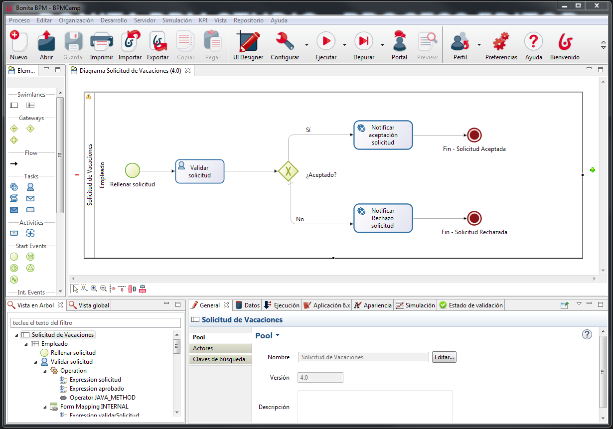
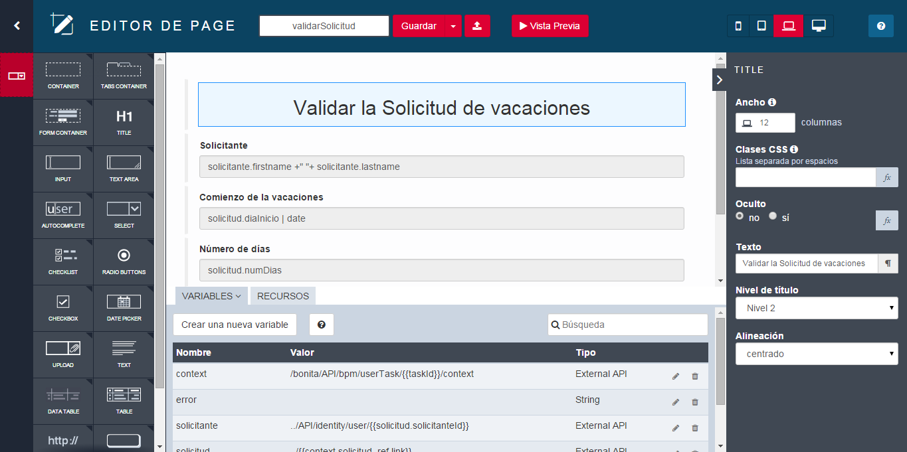
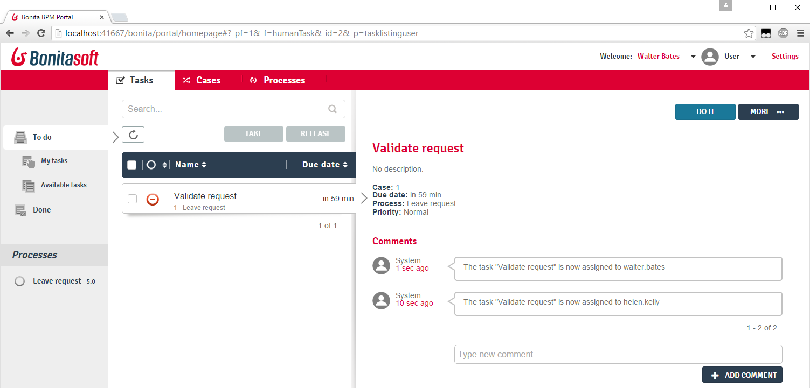
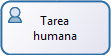
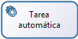

Agenda
- Objetivos BPM
- Componentes de Bonita BPM
- Introducción a BPMN
- Gestión de Datos & Contratos
- Introducción a BPMN(Continuación)
- Formularios & Páginas
- Actores
- Conectores
- Despliegue
Objetivos BPM
Colaborar durante la definición y la ejecución de los procesos de negocio
Monitorizar la ejecución de los procesos
Optimizar procesos
Componentes Bonita BPM
| Bonita Studio | ||
| Bonita Engine | } | Bonita Platform |
| Bonita Portal | ||
Bonita BPM Studio : Editor de Procesos
Bonita BPM Studio : UI Designer
Bonita BPM Engine
Encargado de la ejecución de los procesos (no built-in UI)
Basado en tecnologias relacionadas con Java 7
Empaquetado junto al Bonita Portal en una aplicación web Java
Necesita :
- Un servidor de aplicaciones Java
- Una Base de datos transaccional JDBC
Bonita BPM Portal
Interfaz web para el usuario final y administradores
Muestra la lista de tareas disponibles
Permite desplegar y configurar nuevos procesos
Bonita BPM Portal : Formularios
Renderiza los formularios creados con el UI Designer
Servidos dentro del Bonita Portal o incrustados en una aplicación

Bonita BPM Portal : Aplicaciones
Permite desplegar Aplicaciones de Negocio compuestas por páginas personalizadas implementadas con el UI Designer

Introducción al BPMN
Notación estandard (OMG) para el modelado de procesos
Un proceso se representa por un Pool 
Elementos principales:
 | Evento Inicio |
|  | Tarea Humana |
|  | Tarea Automática |
 | Evento de Fin |
Los elementos se enlazan por Transiciones →
Ejercicio 1
Modelado de un proceso básico
Descarga las instrucciones en el siguiente link:
Gestión de Datos : Ámbito & Ciclos de vida
BDM (Business Data Model)
Completamente accesibles, almacenados en la BD de Negocio
+ Caso de uso: guarda cualquier tipo de datos manipulados por las instancias de proceso y/o las aplicaciones
Variables de Proceso y de Tarea
Accesibles dentro de un proceso o de una instancia de tarea, almacenadas en la BD del Engine, archivadas con la instancia de proceso
+ Caso de uso: ejecución de conectores en cadena
Variables de Formulario
Accesibles desde un Formulario, nunca persisten
+ Caso de uso: procesos y variables almacenadas mostradas y actualizadas en los formularios
Gestión de Datos : Tipos
| BDM | Proceso & Variables de Tareas | Variables de formulario |
|---|---|---|
|
Objetos estructurados compuestos de:
|
Cualquier tipo Java Serializable (Primitivos, Colecciones, tipos personalizados...) | Cualquier tipo JavaScript |
Tipos especiales: Documentos (archivos) con revisiones pueden ser declarados a nivel de proceso.
Contratos
Conjunto de parámetros de entrada requeridos con reglas de validación.
Los datos enviados por los formularios deben satisfacer el contrato al:
- iniciar un proceso
- ejecutar una tarea humana
Contribuye al desacoplamiento de la lógica de proceso y la interfaz de usuario.
Ejercicio 2
Añadiendo variables y especificando contratos
BPMN Introducción (Continuación)
3 tipos de compuertas :
 | Exclusiva |
 | Paralela |
 | Inclusiva |
Buenas prácticas: las compuertas deberían ser simétricas cuando sea posible

Ejercicio 3
Controlando dinámicamente el flujo del proceso con variables
Formularios & Páginas
Creados a través del UI Designer con widgets y contenedores
Basado en AngularJS y Bootstrap.
2 tipos de formularios:
- Los formularios editados deben satisfacer siempre el contrato.
- instanciación de proceso
- tareas humanas
- Formulario de Vista Global (de sólo lectura) definido a nivel de Pool
Widgets
Un conjunto de widgets están incluidos dentro del producto (campos de texto, selectores, date pickers...)
Los widgets personalizados se pueden crear con el UI Designer
Exercise 4
Creando formularios
Actores
Definidos por sendas (lanes) o tareas humanas en el diagrama.
2 opciones de implementación :
| Beneficios | Limitaciones | |
|---|---|---|
| Actores | Siempre actualizados con la Organización | Mapeo estático que no incluye los datos de negocio/proceso |
| Filtros de Actor | Mapeo dinámico que puede incluir los datos de negocio/proceso | Se ejecutan sólo una vez al inicio de la instancia de la tarea |
Ejercicio 5
Configurando actores
Conectores
Permite a los procesos interactuar con otros sistemas de información externos (lo contrario que las APIs)
El Studio dispone de un conjunto de conectores
Los conectores personalizados pueden ser:
- Implementados tanto desde el Studio como en otros Java IDEs
- Importados desde el sitio web de la Comunidad
Ejercicio 6
Usando un conector para mandar un email
Despliegue
Pasos principales para el despliegue de procesos:
| Studio | 1. Configuración del proceso 2. Generación de fichero .bar |
| Portal | 3. Despliegue de fichero .bar 4. Configuración del proceso 5. Activación del proceso |
Gracias por su atención
¿Alguna pregunta?
Recursos Extra :
- Documentación - documentation.bonitasoft.com
- Sitio Web Corporativo - bonitasoft.com
- Comunidad - community.bonitasoft.com
- GitHub - github.com/bonitasoft